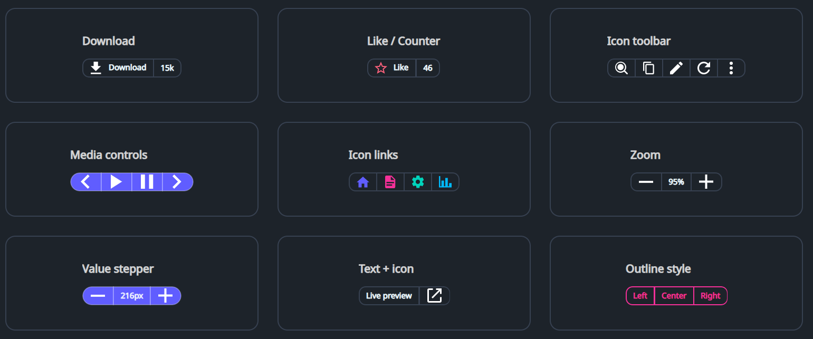

DaisyButtonGroup arranges multiple segments (typically Button / ToggleButton) into a single joined control with shared borders and unified rounding, similar to shadcn's “Button Group”.
It also supports non-clickable segments (for counters/labels) by using a Border as an item inside the group.
DaisyButtonGroup does not provide any icons/content by default; icons (if any) should be supplied via XAML content or set in code-behind.
| Member | Description |
|---|---|
Variant (DaisyButtonVariant) |
Applies a unified color variant to all segments (Default, Primary, Secondary, Accent, etc.). |
Size (DaisySize) |
Applies size tokens to all segments (height, padding, font size). |
ButtonStyle (DaisyButtonStyle) |
Segment style: Default, Outline, Soft, Dash (outer dashed border). |
Shape (DaisyButtonGroupShape) |
Corner rounding: Default, Square, Rounded, Pill. |
Orientation (Orientation) |
Layout direction (Horizontal or Vertical). |
AutoSelect (bool) |
When True, clicking a button segment applies the button-group-active class to it and removes it from sibling buttons. |
ShowShadow (bool) |
When True, renders a subtle shadow around the group. |
ItemSelected event |
Raised when a button segment is clicked; provides the clicked Control. |
<!-- Download button with non-clickable counter -->
<controls:DaisyButtonGroup ShowShadow="True">
<Button Content="Download" />
<Border>
<TextBlock Text="15k" />
</Border>
</controls:DaisyButtonGroup>
<!-- Pill-shaped primary icon group -->
<controls:DaisyButtonGroup Variant="Primary" Shape="Pill" ShowShadow="True">
<Button Padding="0" Width="40">
<PathIcon Data="{StaticResource DaisyIconChevronLeft}" Width="18" Height="18" />
</Button>
<Button Padding="0" Width="40">
<PathIcon Data="M8 5v14l11-7z" Width="18" Height="18" />
</Button>
<Button Padding="0" Width="40">
<PathIcon Data="{StaticResource DaisyIconChevronRight}" Width="18" Height="18" />
</Button>
</controls:DaisyButtonGroup>Border items for label/counter segments so the group can apply borders and padding consistently.Padding="0" and a fixed Width (e.g. 40) to get square buttons.AutoSelect, style .button-group-active for your segment buttons if you want a stronger visual “selected” state.